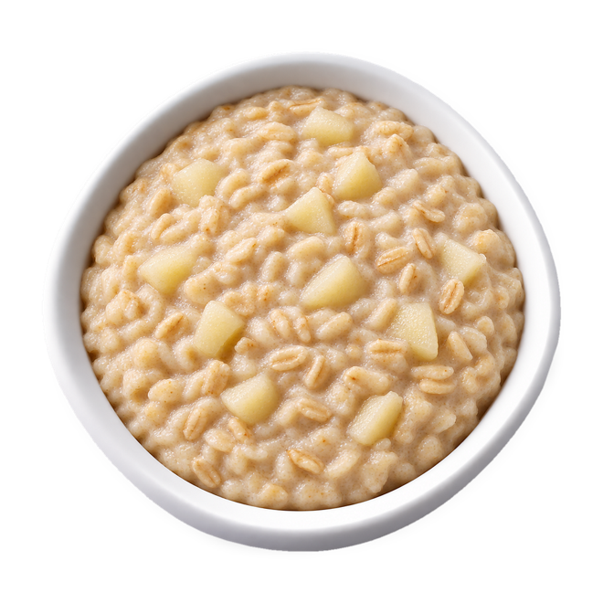

First Meal · Recipe

From 6 months
Cashew and pear porridge
6 min · Makes 1 portion
Allergens
Contains: cashew
oats (may contain gluten)
How to serve
Spoon-fed: Serve as it is.
Baby-led: Let it thicken and offer on a preloaded spoon.
First time with cashew
First time: about 1/4 teaspoon of the thinned cashew butter, stirred into the porridge. Next time: 1/2 teaspoon. Then build up to the full amount over the next few days. Offer it at breakfast so you can watch your baby for the next 2 hours.
Ingredients · 4 items
- 2 tbsp (15 g)Porridge oats
- 100 mlBaby's usual milk (breast milk or formula)
- 1 tspSmooth cashew butter (no added salt or sugar)
- 1/4, softPear
Method · 3 steps
- Cook the oats in the milk over a low heat for 3-4 minutes, stirring, until soft.
- Mix the cashew butter with 1 tsp warm water until runny and stir it in.
- Mash in the pear.
Made with First MealA daily plan for your baby, from the first taste of solid food to the family table at two: what to cook, what comes from the freezer, and when a new allergen is introduced. About First Meal
First Meal follows NHS guidance on foods to avoid, food allergies and preparing and freezing baby food. It is not medical advice: if your baby has a health condition or a diagnosed allergy, follow your doctor's advice.